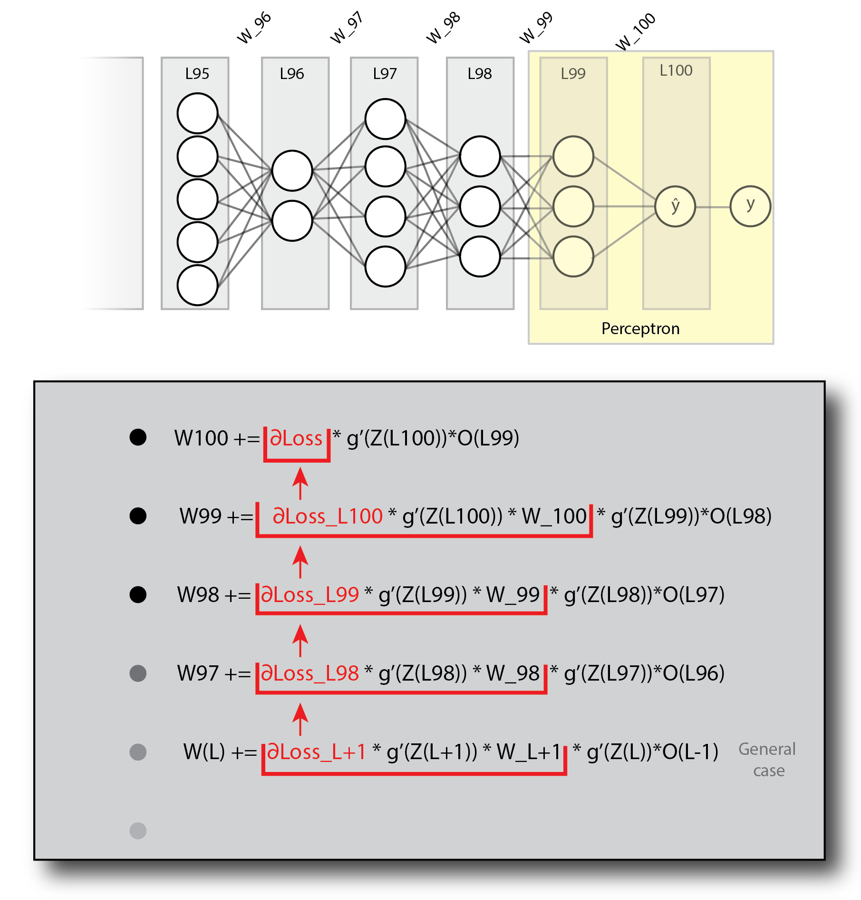

Back-propagation is arguably one of the more difficult concepts in machine learning to grasp. There are many online resources that explain the intuition behind this algorithm (IMO the best of these is the backpropagation lecture in the Stanford cs231n video lectures. Another very good source, is this), but getting from the intuition to practice, can be (put gently) quite challenging.
After spending more hours then i'd like to admit, trying to get all the sizes of my layers and weights to fit, constantly forgetting what's what, and what's connected where, I sat down and drew a diagram that illustrates the entire process. Consider it a visual pseudocode.
So, assuming you have a good intuitive understanding of what the algorithm should be doing, but have trouble getting it to work, this post is for you!
Now, to be clear, this post will NOT make any attempt to explain the intuition part. As I wrote previously, there are many good and reliable resources that do that. This is a simple (as simple as the algorithm allows..) practical guide to help you get your code to work. In fact, your code will probably work if you follow these steps with no intuition whatsoever. Still, I highly encourage you to read a bit about the perceptron. This is the bare bone neural network, consisting of only one layer. Understanding how to calculate the weights in a simple network, is REALLY helpful before jumping into a more complex one.
Ready? Let's jump in!
The illustration below is a schematic representation of an arbitrary network. As the process of backpropagation is basically the same for every step (depending on the activation function you use). We are only looking at the final layers (You can regard layer L95 as the input layer, if that makes you feel more secure. It makes no difference as far as the calculation is concerned).
As you can see, our arbitrary network has 5 neurons on layer 95, then 2 neurons on layer 96, then 4, 3, 3, and 1 neuron for the output layer (L100). All layers are connected by weights, marked (traditionally) by lines.
Notice that each node is separated into Z and O. For each node, the Z values are calculated by multiplying the O values of the previous layer, with the weights connecting them with that node. O is obtained by applying a non linear activation function on Z. Now, below you will find the dreaded gradient calculation. Fear not! We will go over each expression.
When trying to update and optimize the network's weights, we are trying to find , The derivative of the loss with regard to the weights ("how does a change to the weights effects the loss"), and using the chain rule, divide this task into three:
The derivative of the loss with regard to the next layer. This is the loss "passed upstream" from the output layer. or in other words- "How does a change to the next layer, effects the loss".
The derivative of the next layer with regard to the current layer (which can be interpreted as "how a change in the current layer effects the next layer"), which is simply the weights connecting to the next layer multiplied by the derivative of its activation function. and-
- ("How does a change to the weights effect the current layer"), which is the previous layer's O values, multiplied by the current layer's activation function derivative.
To make things clearer, I've written the actual calculations, color coded to our network, for the last two layers of our network, L100 and L99.
Notice that the derivative term related to each calculation appears below it. The two derivatives associated with the loss, appearing in red, are of upmost importance, as they are used in the calculations for the previous layers. This can be seen clearly in the next diagram:

Notice how ∂Loss propagates down the layers. Looking at this pattern, you should start seeing how this could be implemented in code. Also notice that I've highlighted the last two layers, which form the before mentioned Perceptron.
Note that I didn’t mention multiplying the entire expression by the learning rate (α) in this diagram, as it seemed too crowded and shadowed the take home messages, which is the application of the chain rule. you should definitely play with different α values to get the best performance. In any case, α does appear in the next diagram.
An important point to notice is that each layer in the schematic representations we saw, is in fact a vector, representing the computations done for a single instance. Usually we would like to input a batch of instances into the network. This will be clearer after going over the next diagram, which shows the calculation for a batch of n instances. Notice that this is the same exact network (5 neurons for layer L95, 2 neurons for layer L96 and so on...), only that we are now looking at n instances and not just one.
The most challenging part for me, when implementing backprop, was to get the sizes of the different layers and weights and gradient matrices to play nice. This illustration aims to set things in order.

On top you will see the schematic network. The actual size of n makes no difference (for the calculations. obviously it does make a difference in the larger scheme of things...), for as you will notice, when we perform matrix multiplications while backpropagating, we always sum over n. that is to say, the length of n is "lost" during matrix multiplication. And this is exactly what we want, to sum over the loss from all instances in our batch.
The rest of the diagram is divided into two sections:
The forward pass should be pretty obvious to most of you. If it's not, I would recommend reading about matrix multiplications before moving any further.
One thing I will point out is the fact that each weight matrix takes a layer of size (n,k) and outputs a layer of size (n,j). such weight matrix will be of size (k,j).
You will probably notice that this diagram is missing the bias unit. That is because I wanted to keep it as clear as possible, and focus on how the different matrices sizes fit into the backpropagation process. There is a short section on adding the bias unit below.
The backpropagation part is a "bit" trickier... :)
This section of the diagram is divided in to three sub sections:
Variables
Here I list the different elements of the calculation, and most importantly, their shape. A few notes on this part:
Notice that this section groups the variables constituting and
at the top, and those constituting
at the bottom.
output - labels.A few notes about this section:
*σ(z) \*1-σ(z)*) requires only the O values, we don't need the neuron's values before activation (Z). For implementation using different activation functions, you will need to save the Z values when doing a forward pass. def train_network(network, iterations, alpha):
for i in range(iterations):
# forward
for layer in network[1:]:
layer.nodes = activation_function((layer-1).nodes @ layer.weights)
# backward
for layer in network.reverse(): # We iterate our network in reverse order.
if layer is output_layer: # Calculate the loss
∂_L = network[L].nodes - labels
elif layer is (output_layer-1): # These are the first weights to be updated (W100 in the diagrams)
∆w.append(alpha * layer-1.nodes.T @ (∂_L * activation_derivative((layer).nodes)))
else:
∂_L = ∂_L @ (layer+1).weights.T * activation_derivative((layer+1).nodes)
∆w.append(alpha * (layer-1).nodes.T @ (∂_L * activation_derivative(layer.nodes)))
# update weights:
network.weights += ∆w def backprop(current_layer=1):
if current_layer is output_layer:
∂_L = current_layer - labels
current_layer.∆w = ∂_L * g'(Z(current_layer.nodes)) * (current_layer-1).nodes
return ∂_L
else:
∂_L = backprop(current_layer+1)
∂_L = ∂_L * g'(Z((current_layer+1).nodes)) * (current_layer+1).W
current_layer.∆w = ∂_L * g'(Z(current_layer.nodes)) * (current_layer-1).nodes
return ∂_L
layers.W += layers.∆w You may have noticed the previous diagrams were missing the bias units. I chose to leave the bias from these diagrams as I wanted to keep them as simple and intuitive as possible , but you should definitely consider adding it!
You can add a bias "manually" for each layer, and then calculate the derivative of the loss in respect to that bias:
We already calculated , and
is just the activation function derivative of that layer.
You could also add the bias to the weights matrix. This basically just means appending a vector of bias neurons (a vector of 1's) to each layer, and initialize the weight matrices shape accordingly (just like you do in simple linear regression). The one thing to keep in mind though, is that the bias units themselves should never be updated in the forward pass, as they are connected to the neurons of the next layer, but NOT to the neurons of the previous layer (See diagram).

One way you can approach this is to avoid updating these neurons, but this can get tricky, especially in the backward pass (Full disclosure, this is what I did, and I don't recommend it...). A simpler solution is to do the forward and backward pass normally, but re-initialize the bias neurons to 1 after each iteration.
Backpropagation is a tough nut to crack, but if you wish to have a good understanding of how neural networks work, you should avoid jumping into high level solutions such as TensorFlow or Pytorch before implementing a simple network yourself. This is the basis for all deep learning and is crucial for successfully working with more complicated networks. It's also fun (when it works).
Good luck!
Michael Chein 03/02/2019